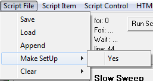

Menu: Script File

Save: Brings up the save file dialog then the contents of the scipt text contained in the memo box is written to the file.
Load: Brings up the open file dialog. The memo box is cleared and the script text from the file is written to the memo box.
Append: Brings up the open file dialog. The memo box is not cleared. The script text from the file is appended to the memo box.
Make SetUp: Writes script text to the memo box, that when ran, will restore the form settings to the current state.
Clear: Clears the script text in the memo box. Both
Make SetUp and
Clear require a click on the
Yes sub menu to procede.
Main: